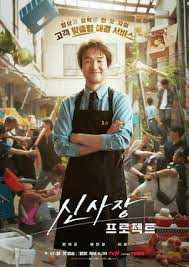
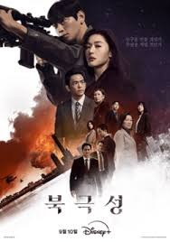

🔥 Trending Now
Confidence Queen
A brilliant con artist leads a trio of daring heists....
More InfoBon Appétit Your Majesty
A royal chef from the future serves dishes that change the fate of a kingdom.....
More InfoMy Youth
A bittersweet journey of friendship and growing up....
More InfoA Hundred Memories
Romance about a bus conductor, Go Young-rye, and her best friend, Seo Jong-hee, whose close bond is tested by their shared first love....
More Info
Queen Mantis
A serial killer with the nickname of the Mantis brutally murdered 5 men 20 years ago...
More Info

Shin's Project
Mr. Shin, an ordinary chicken shop owner who could settles everything with his silver tongue...
More Info

Tempest
A storm of secrets threatens a family’s bond and politics....
More InfoTo The Moon
Three working-class women invest in cryptocurrency to.....
More Info